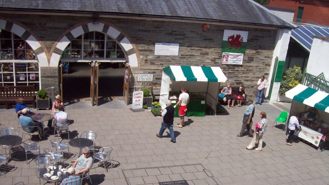
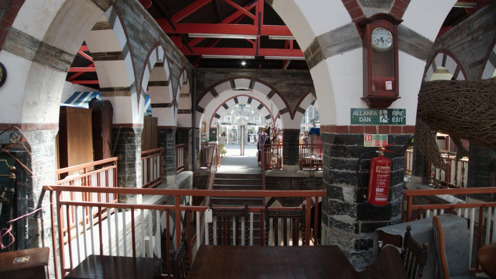

Cardigan market first opened its doors in 1860. It was the first civic building in Britain in the “modern Gothic”
style advocated by John Ruskin, and includes some Arabic influences (as can be seen in the arch decorations).
Over the years the market has gone from strength to strength whilst managed by Ceredigion County Council.

It has been managed since July 2014 by Menter Aberteifi, a not for profit organisation, based in The Guildhall building,
adjacent to the Market. In January 2015, an exciting 2 year project began, funded by the Coastal
Communities Fund. The aim of the project was to regenerate the Market to its former glory as the bustling
hub of community life.

Text and Images were Gathered from old Guildhall Website